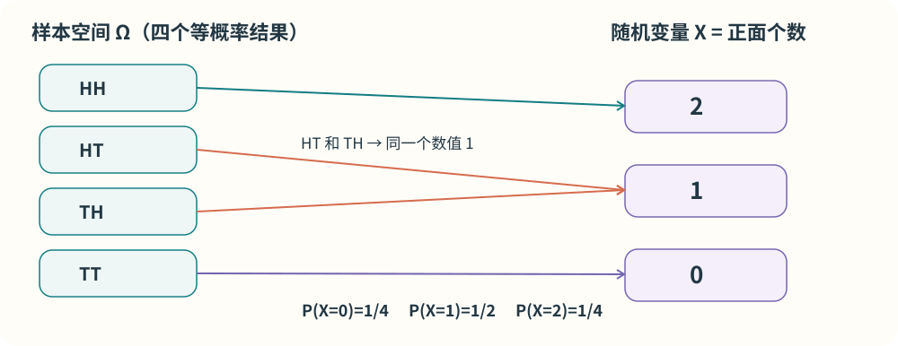
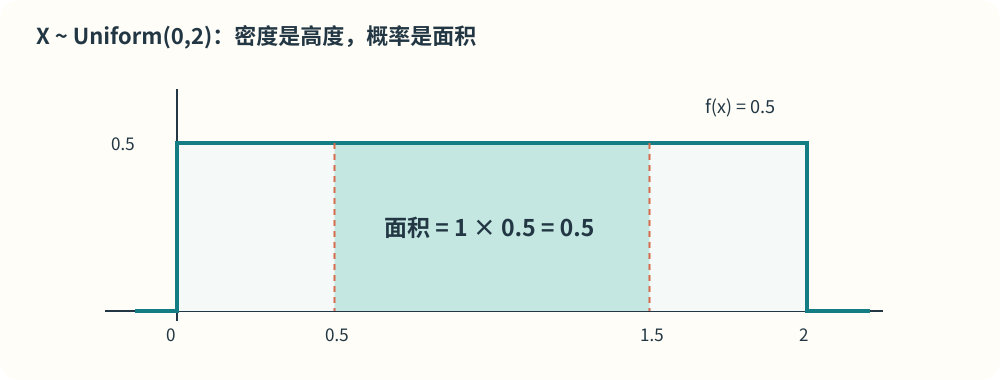

CHAPTER 02 · 概率基础
随机变量及其分布
同一组随机实验结果，如何变成能计算、画图、积分的对象？从一次硬币实验到混合分布，弄清概率的三种语言。
- 从样本空间构造随机变量与累积分布函数
- 准确解释离散 PMF 的跳跃和连续 PDF 的面积
- 识别点质量与连续部分共存的混合分布及其建模假设
从实验结果走到实数轴
抛两枚硬币，样本空间为 Ω={HH,HT,TH,TT}。现在提出一个可计算的问题：“正面出现了几次？”用 X(ω) 表示正面个数，就得到 X(HH)=2、X(HT)=X(TH)=1、X(TT)=0。随机变量不是随机变化的映射规则；它是一个从样本结果到数值的可测函数。

“可测”意味着对任意实数 x，{ω:X(ω)≤x} 是允许赋概率的事件。有限实验中这非常自然：该集合只是四个样本点中的若干个。定义 X 的价值在于，之后的期望、分位数、阈值判决都可以使用相同的数学符号。
从随机变量到随机过程：一次实验中 X 是一个数；随机过程 X(t,ω) 对每个时刻 t 都给出随机变量，对每个实验结果 ω 都给出一条时间曲线。课程第 06 章将沿这条线继续。
CDF：先问“不超过阈值”的概率
累积分布函数 CDF 是最一般的分布描述：它适用于离散、连续以及混合型分布。定义为 FX(x)=P(X≤x)。无论是否存在密度，都能直接用它回答阈值问题。
任何 CDF 必须单调非减、右连续，并在 x→−∞ 时趋近 0、在 x→+∞ 时趋近 1。特别要记住 P(a<X≤b)=F(b)−F(a)：当左端点 a 有正概率时，把左端随意改成“≤”会改变数值。

离散分布：每个点上有多少概率质量？
离散随机变量有有限或可数的取值，使用概率质量函数 PMF：pX(x)=P(X=x)。对所有可能取值求和必须得到 1。两次独立公平抛硬币的正面计数有下表：
| k | 对应样本 | P(X=k) | F(k) |
|---|---|---|---|
| 0 | TT | 1/4 | 1/4 |
| 1 | HT、TH | 1/2 | 3/4 |
| 2 | HH | 1/4 | 1 |
这里 C(2,k) 表示“从 2 次实验中选择 k 次成功”的组合数，而不是 2/k。离散取值并不一定是整数：也可以是 −0.5、π、√2 等；关键特征是概率集中在可数个点上。
连续分布：曲线高度不是事件概率
当分布对 Lebesgue 测度绝对连续时，CDF 可以写成一个非负函数 fX 的积分。PDF 的高度描述局部概率的密集程度，只有区间下的面积才是概率。PDF 可以大于 1，而对具有 PDF 的连续分布，任何单点概率仍为 0。
取 X~Uniform(0,2)，f(x)=0.5（当 0≤x≤2），其余位置为 0。区间 [0.5,1.5] 的宽度为 1，所以概率为 1×0.5=0.5；这不是因为 f(1)=0.5，而是因为积分面积恰好等于这个数字。

该区间内概率 P(0.5≤X≤b)=(b−0.5)/2。
积分面积 =
常见误用：对连续 X，写 P(X=x)=f(x) 是错误的；对于带有离散原子质量的混合分布，仅靠普通 PDF 又不足以描述全部概率。
混合分布：既有跳跃，又有平滑增长
假设一个传感器以 20% 的概率完全不触发，输出数值 0；其余 80% 时输出服从参数 λ=1 的指数分布。这个模型有 P(X=0)=0.2，且在 x>0 处有连续部分 0.8e−x。CDF 在 x=0 时立刻跳到 0.2，之后平滑增长：
当 x<0 时 F(x)=0。特别地 F(0)=0.2，而任何只在 x>0 积分的 PDF 都无法恢复这一点质量。CDF 是混合分布最安全的第一语言。
分布不是标签，而是一组假设
| 分布 | 解释对象 | 必须考虑的前提 |
|---|---|---|
| Bernoulli(p) | 一次成功/失败 | 固定成功概率 |
| Binomial(n,p) | n 次成功次数 | 独立同参数的伯努利试验 |
| Poisson(λ) | 固定窗口内的到达数 | 齐次泊松过程假设 |
| Exponential(λ) | 到达间隔 | 齐次泊松过程的等待时间 |
| Uniform(a,b) | 区间等密度数值 | 在区间内无偏向的模型 |
| Normal(μ,σ²) | 钟形波动 | 模型和数据能够支持高斯假设 |
通信误码、量化误差、到达计数与测量噪声都有典型模型，但不能因为“经常使用某分布”，就把该分布当作物理上的必然真理。建模前应核对独立性、稳定性和支持区间。
用 Python 检查求和、跳跃与积分
以下代码完全确定，不需要采样；仓库还提供 examples/test_intro_math.py 的自动化断言。
import math
pmf = {0: .25, 1: .50, 2: .25}
cdf = lambda x: sum(p for k,p in pmf.items() if k <= x)
assert abs(sum(pmf.values())-1) < 1e-12
assert cdf(1) == .75 and cdf(.999) == .25
assert (1.5-.5)*.5 == .5
mixed_cdf = lambda x: 0 if x < 0 else .2+.8*(1-math.exp(-x))
assert mixed_cdf(0) == .2
思考：一个 PDF 在某处的值等于 2，合法吗？
合法。概率受总面积约束。例如 Uniform(0,0.5) 在区间内的密度就是 2，积分面积仍为 1。
思考：已知 F(1)=0.8，F(1⁻)=0.6，如何解释？
表示 P(X=1)=0.2。CDF 在 1 处有概率质量 0.2 的跳跃。
延伸阅读与核查依据
- NIST · What is a Probability Distribution：离散与连续概率分布。
- NIST · Related Distributions：CDF、PMF、PDF 与积分。
- MIT OCW · Probability and Random Variables：随机变量与典型分布的系统课程材料。